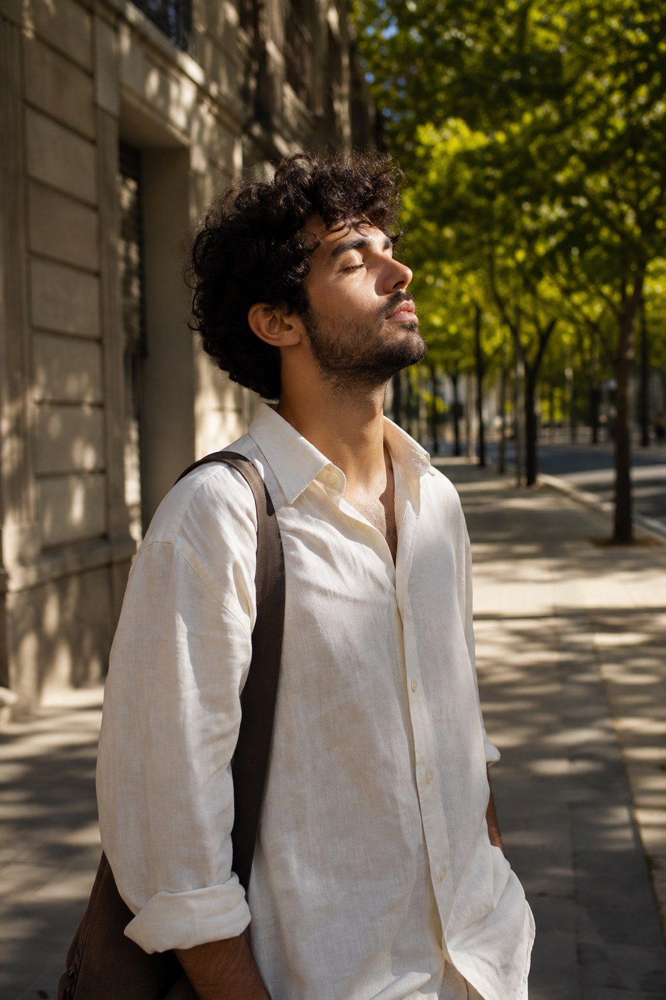
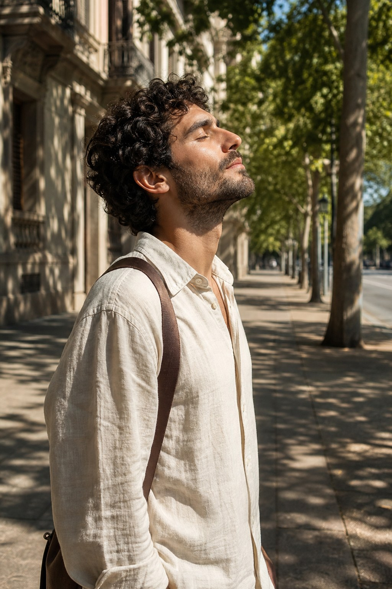
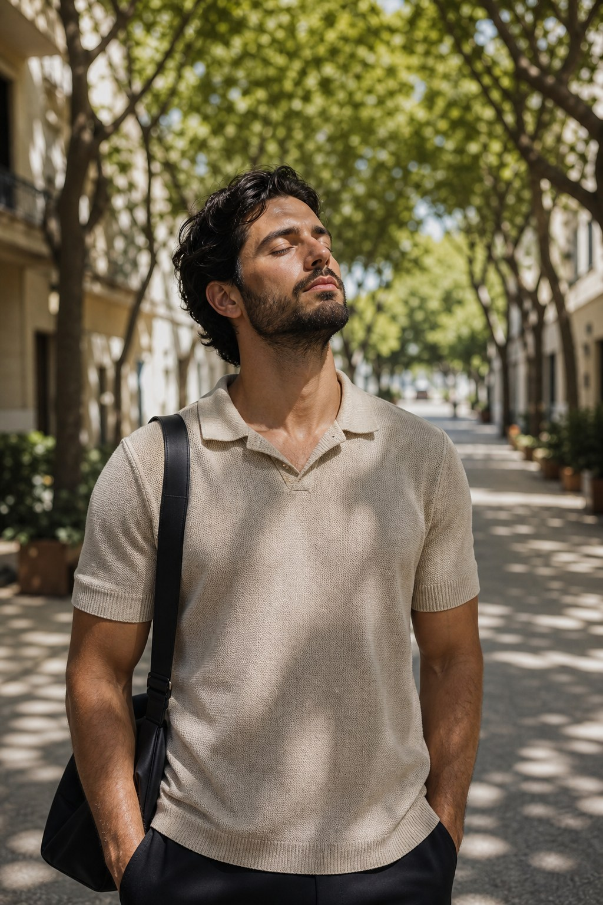
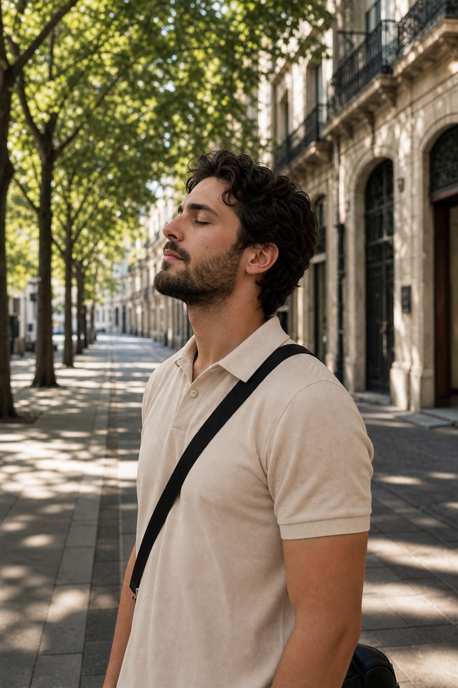
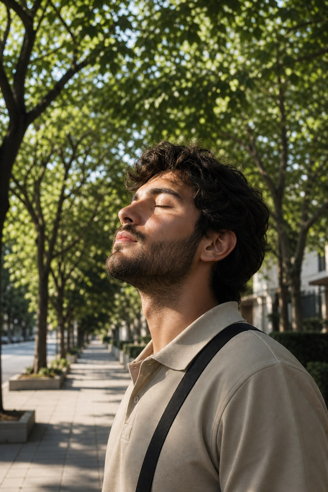
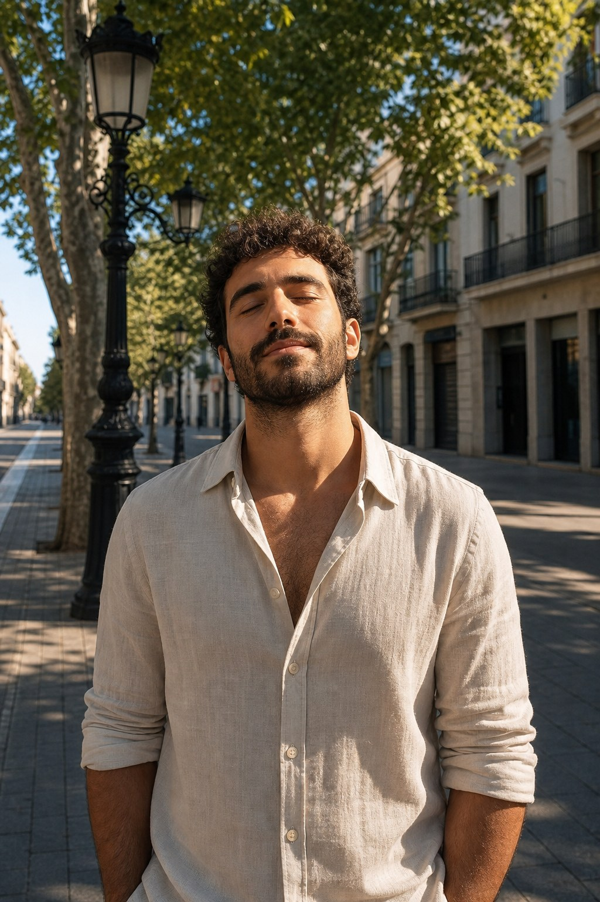
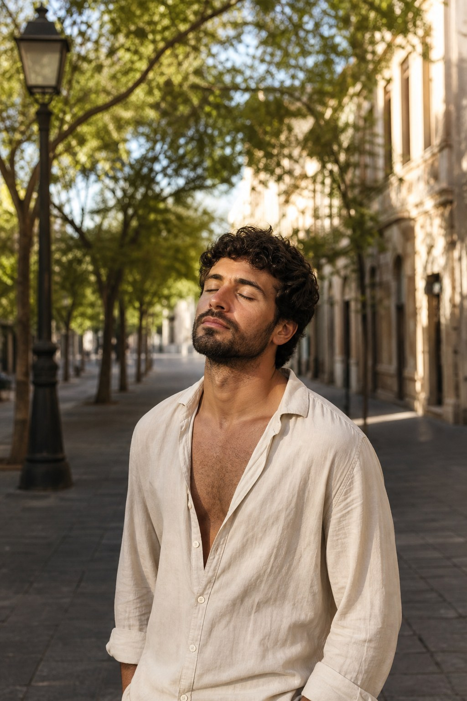
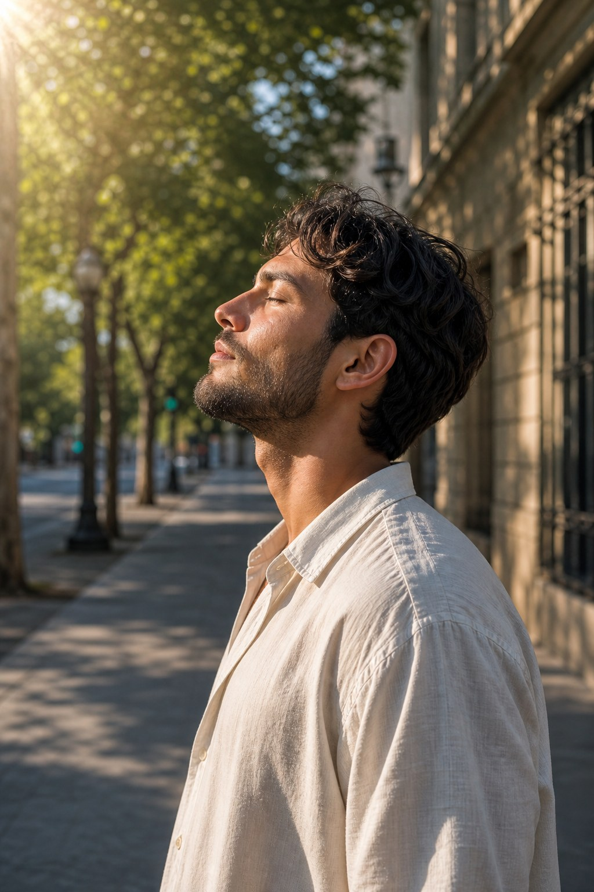

CONJUNTO A · LINO
Instante cerrado
Camisa lino + correa cuero. Acera vacía, sol entre árboles.


Un segundo. El tuyo.
En medio del día, el cuerpo ya sabe parar.
Avatar soulId Gonzalo. Estilo cercano a las refs, no idéntico. Sin gente en fondo — solo el avatar.
9:16 vertical 3×3 tomas sin crowdCamisa lino + correa cuero. Acera vacía, sol entre árboles.


Un segundo. El tuyo.
En medio del día, el cuerpo ya sabe parar.
Polo beige + strap negro. Misma paz, lectura más cotidiana.



Respira. Ya estás aquí.
La calle sigue. Tú no tienes que correr con ella.
Camisa crema + farola europea. Entorno distinto, misma emoción.



Entre una cosa y la otra: calma.
No hace falta salir de la ciudad para volver a ti.